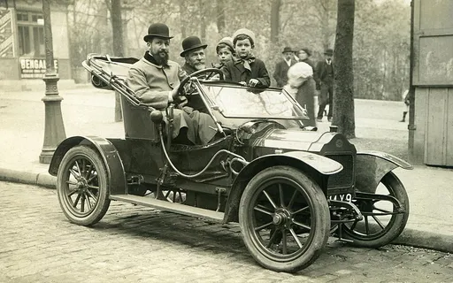
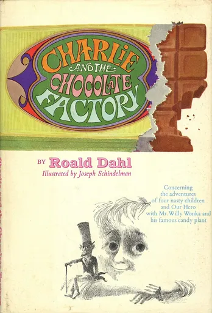
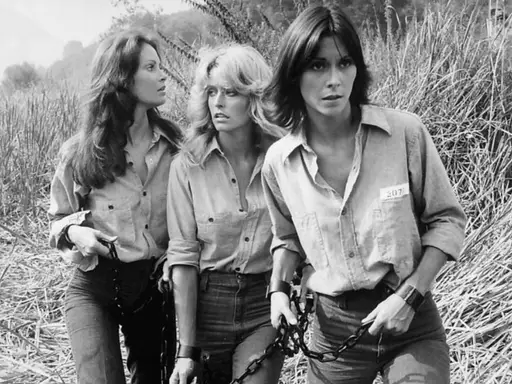
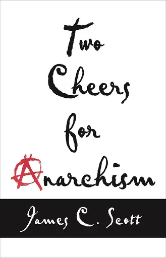
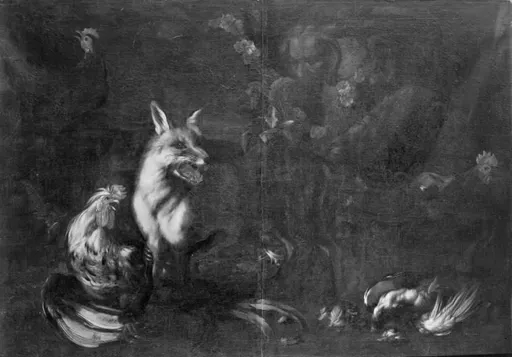
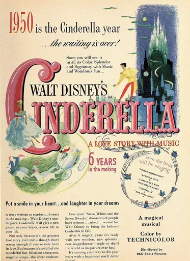
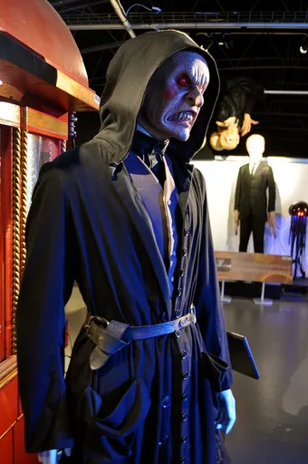
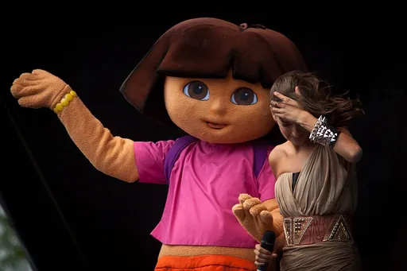
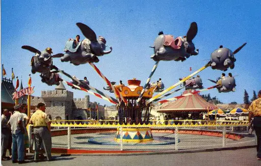

Reject an image by adding its slug to public/charades/charades-movies/reject.txt (append ! to keep it word-only), then re-run node scripts/genimages.mjs.
Captain America captain-america Public domain · Utente:kasper2006 · source

Cars cars Public domain · Alexandre Louis · sourceCasablanca casablanca Public domain · Karimobo · source

Charlie and the Chocolate Factory charlie-and-the-chocolate-factory Public domain · Illustrated by Joseph Schindelman (1923-2018) · source

Charlie’s Angels charlie-s-angels Public domain · ABC Television · source

Cheers cheers Public domain · Unknown authorUnknown author · source

Chicken Run chicken-run Public domain · Franz Werner Tamm · source

Cinderella cinderella Public domain · RKO Pictures · sourceCobra Kai cobra-kai CC BY 2.0 · Super Festivals from Ft. Lauderdale, USA · sourceCoco coco CC BY 4.0 · AnneRiri · source
Despicable Me despicable-me CC BY 2.0 · Jeremy Thompson · sourceDespicable Me 2 despicable-me-2 CC BY 4.0 · Fanculture · source

Doctor Who doctor-who CC BY 2.0 · MangakaMaiden Photography · source

Dora the Explorer dora-the-explorer CC BY 2.0 · Håkan Dahlström from Malmö, Sweden · sourceDownton Abbey downton-abbey CC BY-SA 4.0 · Vbrunophotog · source

Dumbo dumbo Public domain · Unknown authorUnknown author · source